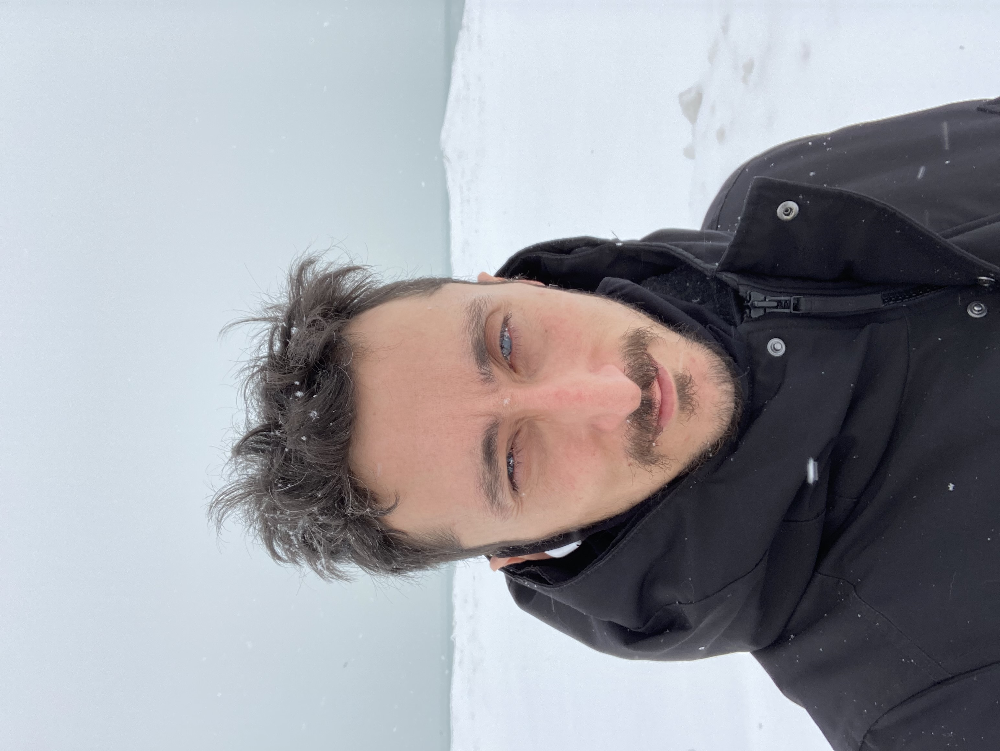

|

|
I am an associate professor at the Computer Science department in the University of Illinois at Chicago, where I am part of the Theory Group.
I did my Ph.D at the
MIT,
advised by
Piotr Indyk.
Funding
NSF HDR TRIPODS: UIC Foundations of Data Science Institute (CCF 1934915)
NSF AF: Small: Approximation Algorithms for Learning Metric Spaces (CCF 1815145)
NSF CAREER: Geometric Frontiers in Algorithm Design (CAREER 1453472)
NSF AF: Small: Approximation Algorithms and Topological Graph Theory (CCF 1423230)
Research
List of publications
by subject
/
chronological.
Software
Learning Lines with Ordinal Constraints (LLOC).
Maintained by Frascesco Sgherzi.
LP-type metric learning (LPTML).
Maintained by Diego Ihara Centurion.
Students
Angelo Straight
Alumni:
Diego Ihara Centurion
Bohan Fan
Neshat Mohammadi
Thiru Sivaprakasam Radhakrishnan
Francesco Sgherzi, MSc, 2021
Kritika Singhal, PhD, 2020 (co-advised with Facundo Memoli)
Ario Salmasi, PhD, 2019 → Facebook.
PhD thesis: Approximation algorithms for routing and related problems on directed minor-free graphs.
Tim Carpenter, PhD, 2019.
PhD thesis: Algorithms for low-distortion embeddings into geometrically restricted spaces.
Vijay Sridhar, PhD, 2018 → Mathworks.
PhD thesis: On the effect of asymmetry and dimension on computational geometric problems.
Alfred Rossi, PhD, 2017 (co-advised with Tamal Dey) → Post-doc at OSU.
PhD thesis: Temporal Clustering of Finite Metric Spaces and Spectral k-Clustering.
Service
Program committee member:
ESA 2024 (Egham),
SoCG 2023 (Dallas),
SODA 2023 (Florence),
STOC 2023 (Orlando),
ITCS 2021,
SODA 2020 (Salt Lake City),
FSTTCS 2019 (Bombay),
CANADAM 2019 (Vancouver),
ICALP 2018 (Prague),
SODA 2018 (New Orleans),
FOCS 2015 (Berkeley),
SIMBAD 2015 (Copenhagen),
SoCG 2015 (Eindhoven),
ESA 2015 (Patras),
ESA 2014 (Wroclaw),
WAOA 2013 (Sophia Antipolis),
TAMC 2013 (Hong Kong),
SODA 2012 (Kyoto).
Workshops
Computational Aspects of Learning and Processing Metrical Data, at SoCG 2020.
Algorithms on topologically restricted graphs, at STOC/SoCG 2016. Co-organized with Ken-ichi Kawarabayashi.
Teaching
Fall 2024, CS 594 Foundations of Permissionless Systems, at UIC.
Fall 2021, CS 594 Foundations of Blockchains, at UIC.
Spring 2018, CS 594 Geometric Algorithms for Data Analysis, at UIC.
Spring 2017, Math 8500 Algorithmic graph theory, at OSU.
Spring 2014, CSE 5339 Algorithm design under a geometric lens, at OSU.
Misc
Outstanding Teaching Award, CSE dept., OSU, 2017.
skeptix, a videogame I made.
Links
UIC Theory Seminar
Contact
E-mail: X@gmail.com (replace X with sidiropo)
Office address: 851 S Morgan St., Room 1240 SEO, Chicago, IL 60607, USA
|